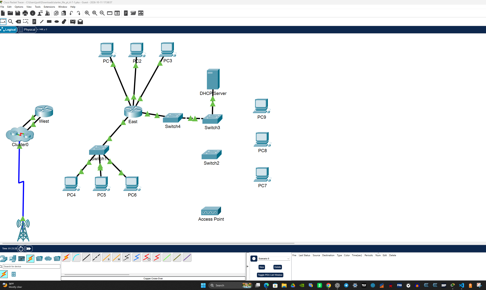
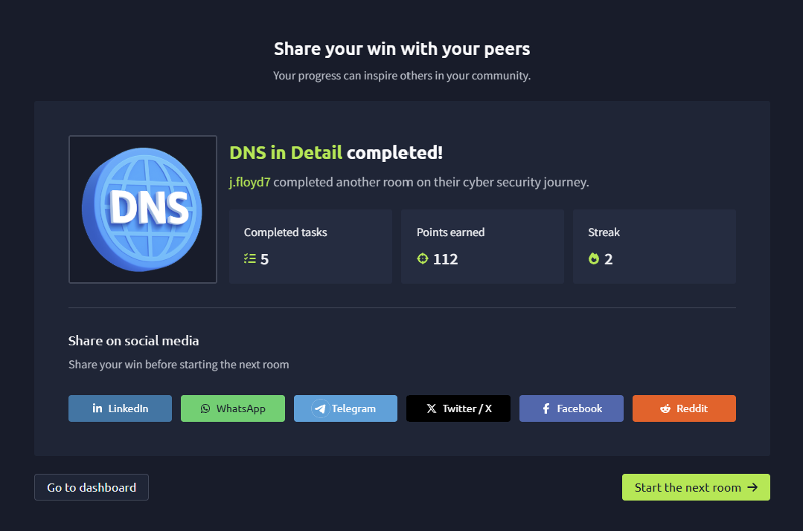
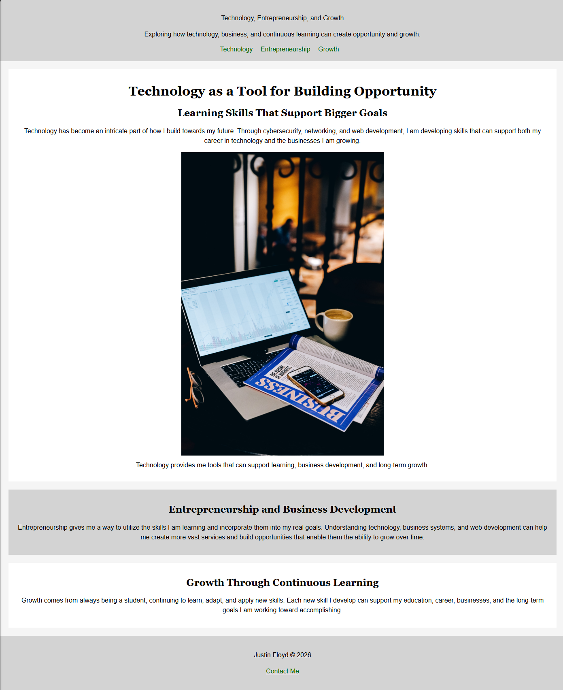

About Me
I'm building technical skills in networking, cybersecurity, and web development while working toward a career in information technology. This portfolio documents the projects, labs, and skills I'm developing along the way.
Skills & Certifications
I'm currently developing skills in networking, cybersecurity, troubleshooting, and web technologies while continuing to build industry certifications and hands-on experience.
Projects & Labs
I am building hands-on projects and labs in networking, cybersecurity, and web development to apply what I am learning and document my progress.
Showing 3 of 3 projects

Cisco Packet Tracer — Physical Layer Lab
Built and verified a network topology using routers, switches, Ethernet, fiber, serial connections, wireless devices, and expansion modules.
Networking Completed LabTools: Cisco Packet Tracer
Skills: Network topology, routers, switches, Ethernet, and physical connections.
What I learned: How network devices and media connect and communicate at the physical layer.

TryHackMe — DNS in Detail
Completed hands-on cybersecurity training focused on how DNS works and how domain names are translated into network addresses.
Cybersecurity Completed LabTools: TryHackMe
Skills: DNS, domain names, IP addressing, and basic cybersecurity concepts.
What I learned: How DNS translates domain names into IP addresses and supports network communication.

HTML & CSS — Technology, Entrepreneurship, and Growth
Designed and built a semantic webpage using HTML and CSS with structured sections, navigation, responsive images, and custom styling.
Web Development Completed ProjectTools: HTML and CSS
Skills: Semantic structure, navigation, responsive images, layout, and custom styling.
What I learned: How to build and style a structured webpage using HTML and CSS.
Contact
This section will provide professional contact information and links as I continue developing my portfolio.